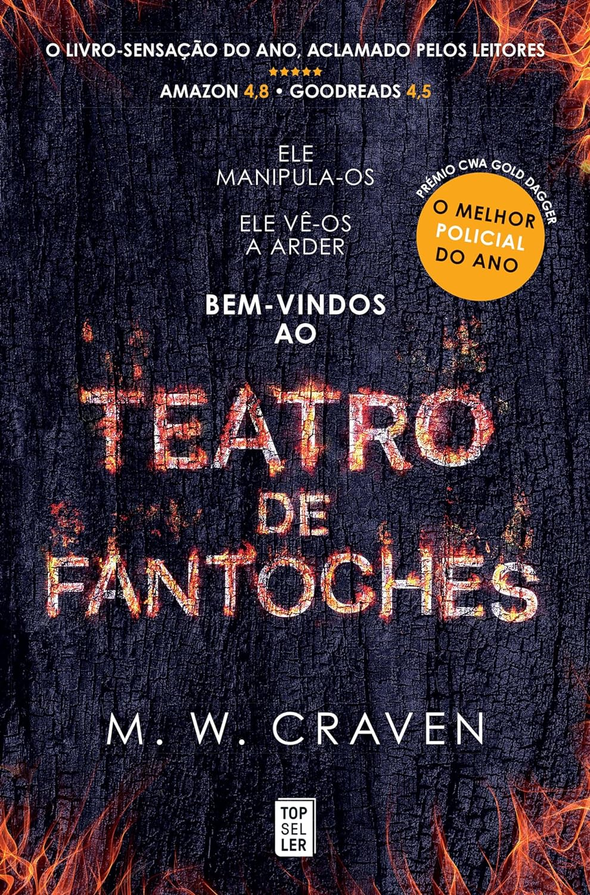

Escolheste mais respostas c)!
Haverá algo pior do que ser queimado vivo? Em “Teatro de Fantoches” de M. W. Craven, um assassino em série anda à solta. Ele raptou, mutilou e queimou homens nos círculos de pedra pré-históricos do condado de Cúmbria. Não deixou pistas, e a polícia está desorientada. Quando o nome do inspetor Washington Poe é encontrado gravado nos restos carbonizados da terceira vítima, ele é chamado a participar na investigação. Poe não se quer envolver, mas o assassino tem um plano e o inspetor faz parte dele. Acaba por formar equipa com a analista de dados Tilly Bradshaw, e juntos irão identificar pistas que só Poe consegue seguir. À medida que o número de corpos aumenta, Poe percebe que há muito mais em jogo do que poderia imaginar. E, num final chocante que destrói tudo aquilo em que acreditava sobre si mesmo, o inspetor descobre que há coisas ainda piores do que ser queimado vivo…
 Compra em Português PT Compra em Inglês